Willkommen bei Double Commander!
Double Commander – ist ein Projekt, das der russische Programmierer Alexander Koblov (Alexx2000@mail.ru) begonnen hat, als Abspaltung von Sexi Commander (Autor – Radek Cervinka, radek.cervinka@centrum.cz).
Es gibt mehrere Möglichkeiten, Double Commander zu erhalten:
Die Seite Veröffentlichungen auf GitHub.
Die Seite Veröffentlichungen auf SourceForge.
Double Commander ist in den Repositories vieler Linux-Distributionen und in der FreeBSD-Ports-Sammlung verfügbar.
Double Commander hat ein eigenes Repository für mehrere Linux-Distributionen (die offiziellen Repositories der Linux-Distributionen enthalten nicht immer die aktuelle (neueste) Version des Programms).
Und Sie können Double Commander selbst erstellen.
Außerdem stehen ein Versionsarchiv und nächtliche Entwicklungsversionen zur Verfügung.
Zuerst müssen Sie das Betriebssystem (Windows, Linux, macOS) und die Prozessorarchitektur wählen, danach können Sie die Version zum Herunterladen auswählen.
Für Windows gibt es eine ausführbare Datei .exe (Inno Setup) oder .msi und ein Archiv .zip (das ist die sogenannte portable Version).
Für Linux gibt es Versionen auf Basis des GTK-Toolkits und auf Basis von Qt (Qt5 oder Qt6). Außerdem gibt es portable Versionen (kompilierte Binärdateien, mit XZ gepackt) und Dateien im AppImage-Format.
Beim ersten Start erkennt Double Commander automatisch die Systemsprache und stellt sie für die Oberfläche ein. DC ist in viele Sprachen übersetzt. Die Sprache lässt sich in den Programmeinstellungen ändern.
Double Commander ermittelt das aktuelle Systemdesign und verwendet es. So sieht das aus (Ubuntu, drei Designs und zwei Symbolsammlungen):
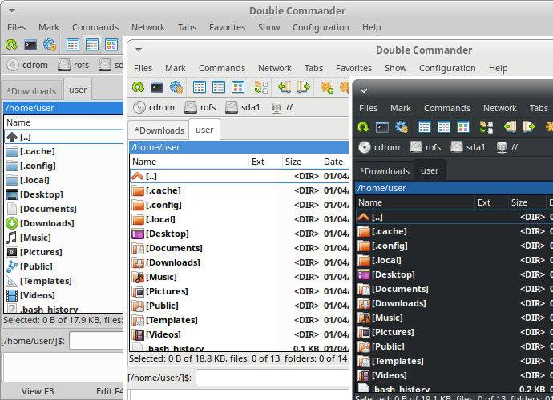
Wie die Abbildung zeigt, gibt es ein linkes Dateipanel, eine Befehlszeile und ein unteres Fenster, das eine Protokollanzeige ist (sie zeigt alle Aktionen des Dateimanagers). Double Commander unterstützt unter Windows außerdem den Dunkelmodus (Windows 10 1809 und neuer).
Double Commander verwendet die Plugin-API von Total Commander, deshalb können Sie unter Windows Plugins von Total Commander verwenden (viele davon sind mit DC kompatibel). Die Beschreibung der Plugin-Arten steht im Einstellungsabschnitt Plugins. DC wird mit mehreren vorinstallierten Plugins ausgeliefert, weitere Plugins lassen sich von Hand installieren.
Die Oberfläche von Double Commander.
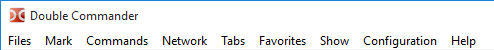
Die Menüleiste bietet Zugriff auf alle Funktionen von Double Commander. Vergessen Sie aber nicht, dass sich die meisten Aktionen auch anders ausführen lassen: über Tastenkürzel oder Schaltflächen auf der Werkzeugleiste.
Dieses Menü enthält fast alle Aktionen, die sich auf Dateien anwenden lassen. Bitte beachten Sie alle Einträge:
Symbolischen Link erstellen... (interner Befehl cm_SymLink). Mit diesem Eintrag erzeugt Double Commander einen symbolischen Link auf die Datei unter dem Cursor und legt ihn in dem Ordner ab, der im gegenüberliegenden Panel geöffnet ist.
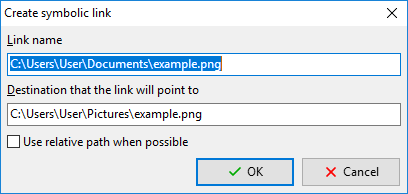
Linkname – hier stehen der Pfad zum Link und sein Name. Der Name ist das letzte Wort nach dem letzten Verzeichnistrennzeichen in der Zeile.
Ziel, auf das der Link zeigen wird – das Objekt, auf das der Link erzeugt wird.
Relativen Pfad verwenden, wenn möglich – wenn möglich, verwendet Double Commander den relativen Pfad zum Verzeichnis des Objekts.
Harten Link erstellen... (interner Befehl cm_HardLink). Wie der symbolische Link oben, der Link ist jedoch hart, und ein relativer Pfad steht nicht zur Verfügung.
Verzeichnis erstellen (interner Befehl cm_MakeDir) – erzeugt ein neues Unterverzeichnis im aktuellen Verzeichnis. Angeboten wird der Dateiname (ohne Erweiterung) oder der Verzeichnisname unter dem Cursor, das ist nützlich, um mehrere Verzeichnisse mit ähnlichen Namen zu erzeugen. Sie können auch mehrere Unterverzeichnisse in einem Vorgang erzeugen, trennen Sie die Unterverzeichnisse einfach mit dem Verzeichnistrennzeichen (unter Unix/Linux ist das „/“ und unter Windows „\“).
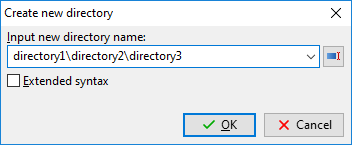
Die Schaltfläche mit einem Pfeil öffnet den Verlauf der eingegebenen Namen. Die Schaltfläche rechts neben dem Eingabefeld schaltet die automatische Vervollständigung aus dem Verlauf der Verzeichnissezeugung ein oder aus.
Wenn Erweiterte Syntax aktiviert ist, kann die Vorlage <[] verwendet werden, um das aktuelle Datum bzw. die aktuelle Uhrzeit einzufügen: Innerhalb der eckigen Klammern können Sie Formatzeichen für Datum und Uhrzeit und alle Zeichen verwenden, die in Dateinamen erlaubt sind.
Verknüpfung erstellen (nur Windows) – Double Commander erzeugt eine Verknüpfung (Microsoft-Windows-Datei .lnk) auf die Datei unter dem Cursor und legt sie in dem Ordner ab, der im gegenüberliegenden Panel geöffnet ist.
Attribute ändern... (interner Befehl cm_SetFileProperties) – erlaubt es, Zeitstempel und Attribute (Windows) oder Dateirechte (Linux und andere Unix-ähnliche Systeme) zu ändern, einschließlich Unterordnern oder ohne sie.
Dateieigenschaften anzeigen... (interner Befehl cm_FileProperties) zeigt den Standarddialog „Eigenschaften“ (Windows) oder den eigenen Dialog von Double Commander (Linux und andere Unix-ähnliche Systeme), etwa so:
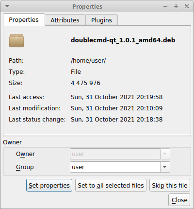
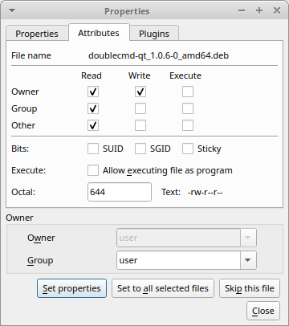
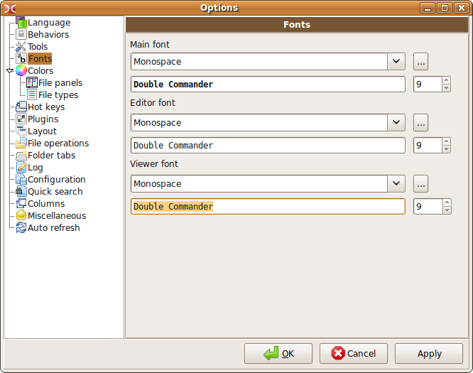
angezeigt werden Name der Datei oder des Ordners, MIME-Typ, Größe, Schreibzeit und Zeitpunkt des letzten Zugriffs. Bei Links zeigt Double Commander zusätzlich das Linkziel (symbolischer Link) oder ihre Gesamtzahl (harter Link). Auf der Registerkarte „Attribute“ können Sie die Zugriffsrechte der Datei und ihren Besitzer ändern (wenn Sie die Rechte dazu haben). Die Registerkarte „Plugins“ ist optional und nur verfügbar, wenn Sie ein passendes Inhalts-Plugin haben (in diesem Fall war es DEB). Siehe auch die Beschreibung von <SystemItemProperties>.
Mit dem Eintrag Kommentar bearbeiten... (interner Befehl cm_EditComment) können Sie Dateikommentare erzeugen oder ändern, die in einer Datei descript.ion gespeichert werden (um einen Kommentar zu löschen, öffnen Sie das Dialogfenster und leeren Sie das Eingabefeld). Unterstützt werden die Kodierungen UTF, ISO, KOI und ANSI. Im Einstellungsabschnitt Verschiedenes können Sie die Standard-Textkodierung festlegen.
Kommentare funktionieren nur bei normalen Dateien auf dem lokalen Dateisystem, nicht auf entfernten oder virtuellen Dateisystemen (zum Beispiel auf einem FTP-Server, in einem Archiv usw.). Damit Double Commander den Inhalt von descript.ion bei Dateioperationen berücksichtigt, stellen Sie sicher, dass Kommentare mit Dateien/Ordnern verarbeiten im Einstellungsabschnitt Dateioperationen aktiviert ist.
Der Eintrag Belegten Speicherplatz berechnen (interner Befehl cm_CalculateSpace) berechnet die Größe der ausgewählten Objekte in gerundeten Einheiten und in Bytes.
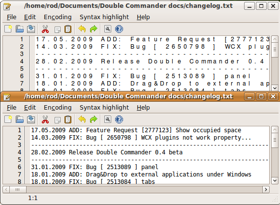
Nach Inhalt vergleichen (interner Befehl cm_CompareContents) zeigt ein Fenster mit zwei Panels mit den zu vergleichenden Dateien (gewöhnlich Text).
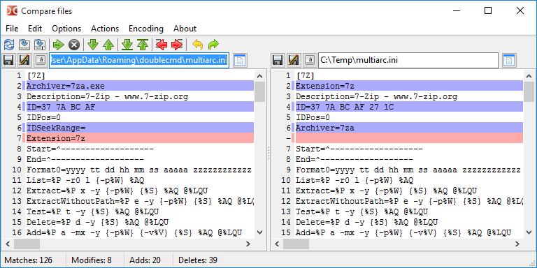
Es ist ein einfaches Werkzeug zum visuellen Vergleichen und Zusammenführen mit den üblichen Funktionen: Navigation zwischen Unterschieden (nächster, vorheriger, erster oder letzter), Kopieren von Textblöcken von rechts nach links und von links nach rechts, Bearbeiten der Dateien an Ort und Stelle, Rückgängigmachen und Wiederholen der letzten Änderungen, Speichern unter einem anderen Namen und Weiteres.
Optionen:
Automatisch vergleichen – Automatischer Vergleich, wenn die Parameter Leerzeichen ignorieren und Groß-/Kleinschreibung ignorieren geändert werden. Und auch beim Auswählen einer neuen Datei.
Leerzeichen ignorieren – Wenn aktiviert, werden mehrere Leerzeichen als eines gezählt.
Groß-/Kleinschreibung ignorieren – Wenn aktiviert, wird nicht zwischen Groß- und Kleinschreibung unterschieden.
Unterschiede in der Zeile – Wenn aktiviert, werden auch Unterschiede innerhalb der Zeilen angezeigt.
Binärmodus – das Ergebnis wird in binärer Form dargestellt.
Scrollen koppeln – ermöglicht synchrones Scrollen (senkrecht und waagerecht).
Die verwendeten Farben lassen sich im Einstellungsabschnitt Farben ändern (Kategorie Unterschied). Siehe auch Position des Rahmenpanels nach dem Vergleich.
Die beiden Dateien werden wie folgt gewählt
Wenn im aktiven Panel zwei Dateien ausgewählt sind, werden sie im Vergleichswerkzeug geöffnet. Die erste ausgewählte Datei wird im linken Panel des Vergleichswerkzeugs geöffnet.
Wenn nur eine Datei ausgewählt ist, wird sie mit der ausgewählten Datei im inaktiven Panel verglichen.
Wenn nur eine Datei ausgewählt ist und im inaktiven Panel nichts ausgewählt ist, wird sie mit einer Datei im zweiten Panel verglichen, die denselben Namen hat (falls sie existiert), oder mit der Datei unter dem Cursor.
Wenn nichts ausgewählt ist, wird die Datei unter dem Cursor mit einer Datei im anderen Panel verglichen, die denselben Namen hat (falls sie existiert), oder mit der Datei unter dem Cursor.
Im Abschnitt Werkzeuge > Vergleich können Sie ein externes Vergleichswerkzeug festlegen.
Mehrfach-Umbenennen (interner Befehl cm_MultiRename)
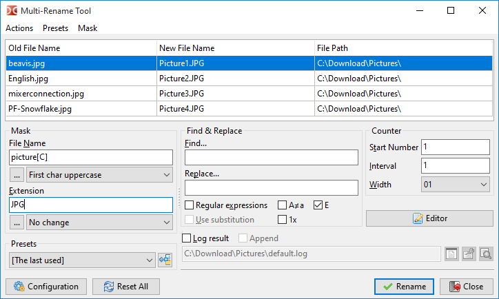
Erlaubt es, beliebige Dateien nach einer festgelegten Maske umzubenennen. Zum Beispiel können einige Dateien mit unterschiedlichen Namen in Bild1, Bild2, Bild3 usw. umbenannt werden. Wählen Sie zuerst die umzubenennenden Dateien aus und starten Sie dann dieses Werkzeug (siehe die Abbildung oben). Dort sehen Sie die alten und die neuen Namen Ihrer Dateien. Eine ausführliche Beschreibung steht auf dieser Seite.
Über den Eintrag Dateien packen (interner Befehl cm_PackFiles) rufen wir einen Standarddialog auf, um Dateien in die Archivformate zip, tar und andere zu packen: Die Liste der unterstützten Formate hängt von den hinzugefügten Packer-Plugins und externen Archivprogrammen ab (siehe Archivverwaltung).
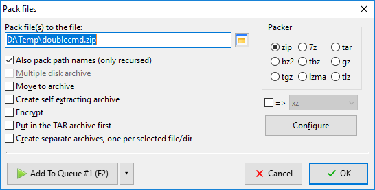
Wenn die Liste der verfügbaren Formate zu lang ist und nicht in das Fenster passt, fasst Double Commander sie in einem Aufklappmenü zusammen (verwenden Sie in diesem Fall das Kontrollkästchen mit der Beschriftung „=>“).
Die Wirkung der Schaltfläche Konfigurieren hängt vom ausgewählten Archivprogramm ab:
Packer-Plugins (WCX): öffnet das eigene Einstellungsfenster des Plugins (wenn das ausgewählte Plugin diese Funktion unterstützt);
externe Archivprogramme: öffnet ein Fenster mit einem Eingabefeld für zusätzliche Archivparameter (bei Verwendung der Variable %S). Double Commander speichert die eingegebene Parameterzeichenkette automatisch, die Schaltfläche mit einem Pfeil öffnet die Liste der zuvor gespeicherten (siehe die Beschreibung von AskHistory).
Dateien können wir auch entpacken über Dateien entpacken (interner Befehl cm_ExtractFiles). Derselbe Dialog wird aufgerufen, wenn Sie Dateien aus dem Archiv kopieren.
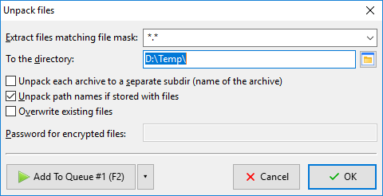
In der Zeile Dateien entpacken, die der Dateimaske entsprechen können Sie eine Maske angeben, die festlegt, welche Dateien entpackt werden. Der Verlauf der Masken steht in der Aufklappliste.
Hinweis: Beachten Sie, dass Double Commander einen gemeinsamen Verlauf der Dateimasken für mehrere Werkzeuge speichert: Dateien suchen, Verzeichnissynchronisierung, Entpacken von Archiven, Befehle zum Auswählen einer Dateigruppe.
Die nächste Zeile gibt das Zielverzeichnis an (wohin das Archiv entpackt wird). Es lässt sich von Hand ändern oder durch einen Klick auf die Durchsuchen-Schaltfläche ganz rechts.
Jedes Archiv in ein eigenes Unterverzeichnis entpacken (Name des Archivs) – Wenn aktiviert, erzeugt Double Commander im Zielverzeichnis einen Ordner mit demselben Namen wie das Archiv und entpackt die Dateien in diesen Ordner. Sie können mit dieser Option mehrere Archive auf einmal entpacken, und jedes wird in einen eigenen Ordner im Zielverzeichnis entpackt. Der unbestimmte Zustand des Kontrollkästchens (drei Zustände) schaltet das intelligente Entpacken ein: Wenn in der Wurzel des Archivs mehrere Objekte liegen, wird der Inhalt des Archivs in einen Ordner mit dem Namen des Archivs entpackt; liegt dort nur ein Objekt, wird der Inhalt so entpackt, wie er ist. Standardmäßig ist es deaktiviert, und sein Zustand wird für den nächsten Aufruf des Entpackbefehls nicht gespeichert.
Pfadnamen entpacken, falls mit den Dateien gespeichert – Wenn aktiviert, bleibt die Verzeichnisstruktur im Archiv erhalten. Andernfalls werden alle Dateien entpackt, ohne die Verzeichnisstruktur neu zu erzeugen.
Das Kontrollkästchen Vorhandene Dateien überschreiben schaltet die Bestätigung beim Überschreiben vorhandener Dateien aus.
Archiv(e) prüfen (interner Befehl cm_TestArchive) prüft die Unversehrtheit des Inhalts der ausgewählten Archivdateien oder der Datei unter dem Cursor. Wenn der Archivinhalt beschädigt ist, wird eine Fehlermeldung ausgegeben. Die Liste der unterstützten Formate hängt von den hinzugefügten Packer-Plugins und externen Archivprogrammen ab.
Die Einträge Datei teilen und Dateien zusammenfügen (interne Befehle cm_FileSpliter und cm_FileLinker)
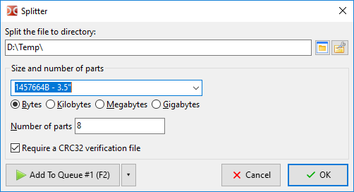
Datei in Verzeichnis aufteilen – gibt den Zielordner für die Teildateien an. Standardmäßig wird das Verzeichnis des inaktiven Dateipanels verwendet.
Die nächste Parametergruppe erlaubt es, die Größe der Teile oder ihre Anzahl zu wählen. Sie können einen eigenen Wert eingeben oder eine der Vorgaben verwenden:
1457664 B - 3.5" – Diskettenlaufwerk 3,5 Zoll;
98078 KB - ZIP 100 MB – ZIP-Laufwerk;
650 MB - CD 650 MB – Größe eines CD-Laufwerks;
700 MB - CD 700 MB – Größe eines CD-Laufwerks;
4482 MB - DVD+R – Größe eines DVD-Laufwerks.
Wenn Sie den Parameter Anzahl der Teile verwenden, wird die Größe der Teile immer in Bytes angezeigt.
Wenn CRC32-Prüfdatei verlangen aktiviert ist, erzeugt Double Commander eine Textdatei mit dem Namen der Quelldatei und der Erweiterung „.crc“, die den Namen der Quelldatei, ihre Größe und die Prüfsumme enthält (verwendet wird der Algorithmus CRC32). Das ist eine einfache Möglichkeit zu prüfen, dass die Datei richtig zusammengefügt wurde und ihre Teile beim Verschieben nicht verändert wurden. Wenn diese Datei nicht vorhanden ist, zeigt Double Commander eine Warnung, das hindert Sie aber nicht daran, die ursprüngliche Datei zu erhalten (in diesem Fall kann das Programm jedoch die ursprüngliche Dateierweiterung nicht anfügen).
Wenn Sie auf die Schaltfläche OK klicken, erhalten Sie mehrere Dateien im Zielverzeichnis. Als Dateierweiterung verwendet Double Commander eine fortlaufende Nummerierung aus drei oder mehr Ziffern (wenn das nötig ist). Um die Datei wieder zusammenzufügen, wählen Sie den ersten Teil und klicken auf Dateien zusammenfügen (cm_FileLinker). Oder wählen Sie alle Teile aus, Sie können auch die Reihenfolge der zusammenzufügenden Teile angeben.
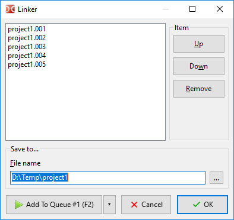
Diese Funktion ist sehr nützlich, wenn Sie kleine Datenträger und große Dateien haben. Die Dateiteile lassen sich verschieben. Beachten Sie, dass dieses Werkzeug keinen besonderen Container und kein Archiv erzeugt, sondern die Datei nur teilt oder zusammenfügt. Teile der Datei können deshalb auch mit anderen Programmen beschafft und sicher zusammengefügt werden.
Der Eintrag Prüfsumme berechnen... (interner Befehl cm_CheckSumCalc) dient dazu, die Prüfsumme zu berechnen, um die Unversehrtheit von Dateien zu prüfen. Die folgenden Prüfsummen stehen zur Verfügung: BLAKE2 (BLAKE2s, BLAKE2sp, BLAKE2b, BLAKE2bp), BLAKE3, CRC32, HAVAL, MD4, MD5, RIPEMD128, RIPEMD160, SFV, SHA, SHA2 (Hashlängen 224, 256, 384 oder 512 Bit), SHA3 (Hashlängen 224, 256, 384 oder 512 Bit), Tiger/192, XXH128 (XXH3 mit einer Hashlänge von 128 Bit).
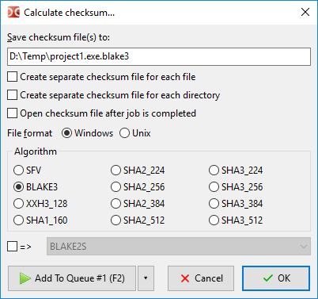
Prüfsummendatei(en) speichern unter: – die Zeile gibt Name und Pfad der berechneten Prüfsumme an.
Eigene Prüfsummendatei für jede Datei erstellen – wenn die Prüfsumme für mehrere Dateien berechnet wird, erlaubt diese Option, für jede Zieldatei eine eigene Prüfsummendatei zu erzeugen.
Eigene Prüfsummendatei für jedes Verzeichnis erstellen – Double Commander durchsucht die ausgewählten Ordner oder den Ordner unter dem Cursor und erzeugt in jedem Unterverzeichnis eigene Prüfsummendateien. Das Programm berücksichtigt die Ignorierliste und den Status der Option System- und versteckte Dateien anzeigen nicht.
Prüfsummendatei nach Abschluss öffnen – nach Abschluss der Operation wird die Prüfsummendatei im Dateibetrachter geöffnet.
Dateiformat – erlaubt es, die Art des Zeilenendes und das Verzeichnistrennzeichen statt der üblicherweise verwendeten Werte unter Windows (CRLF und „\“) und unter Unix-ähnlichen Systemen (LF und „/“) anzugeben.
Der Eintrag Prüfsumme prüfen... (interner Befehl cm_CheckSumVerify) startet die Prüfung der Liste der Prüfsummen aus der Prüfsummendatei unter dem Cursor. Sie können diesen Befehl auch ausführen, indem Sie die Prüfsummendatei doppelt anklicken (oder die Taste Enter verwenden).
Double Commander kann Dateien einzeln prüfen: Wählen Sie die Datei aus, führen Sie diesen Befehl aus, geben Sie nun ihre Prüfsumme ein (oder fügen Sie sie aus der Zwischenablage ein) und wählen Sie den Algorithmus.
Sie können Prüfsummendateien verwenden, die von anderen Programmen erzeugt wurden, stellen Sie aber zuerst sicher, dass Double Commander ihren Algorithmus und ihr Format unterstützt.
Der Eintrag Sicher löschen (interner Befehl cm_Wipe) für das sichere Löschen (Tastenkürzel standardmäßig Alt+Del): Vor dem Löschen von der Festplatte wird die ausgewählte Datei mit einem zufälligen Namen umbenannt, und ihr Inhalt wird dreimal überschrieben (Nullen, Einsen und Zufallsdaten). Die Anzahl der Löschdurchgänge können Sie unter Konfiguration > Einstellungen... > Dateioperationen festlegen. Verzeichnisse und Links werden vor dem Löschen nur umbenannt.
Hinweis: Einige Eigenschaften von Solid-State-Laufwerken (Speicherbereinigung, TRIM) erschweren die Wiederherstellung gelöschter Dateien erheblich oder machen sie unmöglich. Die Verwendung des Befehls cm_Wipe auf einer SSD kann deshalb eine sinnlose Verschwendung der Geräteressourcen sein.
Der Eintrag Löschen (interner Befehl cm_Delete) – löscht die ausgewählten Dateien oder die Datei unter dem Cursor in den Papierkorb oder endgültig. Standardmäßig verschiebt Double Commander Dateien in den Papierkorb, das können Sie unter Konfiguration > Einstellungen... > Dateioperationen ändern. Das Löschen in den Papierkorb ist möglicherweise nicht auf allen Plattformen verfügbar.
Um Dateien innerhalb eines Archivs zu löschen (in diesem Fall werden die Dateien direkt gelöscht), müssen Sie ein passendes WCX-Plugin hinzufügen oder ein externes Archivprogramm konfigurieren, außerdem muss das Archivformat die Löschoperation unterstützen.
Der Eintrag Beenden (interner Befehl cm_Exit) – schließt Double Commander.
In dieser Gruppe gibt es einige Befehle, mit denen Sie Dateien auf verschiedene Arten auswählen können.
Der erste und der zweite Eintrag Gruppe auswählen und Gruppe abwählen (interne Befehle cm_MarkPlus und cm_MarkMinus). Diese Befehle wählen Dateigruppen nach einer Maske aus. Mit dieser Maske können Sie Dateinamen oder Erweiterungen angeben (Sie können mehrere Werte angeben, getrennt durch Semikolons „;“ ohne Leerzeichen). Außerdem gibt es eine Aufklappliste mit dem Maskenverlauf.
Hinweis: Beachten Sie, dass Double Commander einen gemeinsamen Verlauf der Dateimasken für mehrere Werkzeuge speichert: Dateien suchen, Verzeichnissynchronisierung, Entpacken von Archiven, Befehle zum Auswählen einer Dateigruppe.
Zum Beispiel alle Dateien auswählen, die die Erweiterung txt haben:
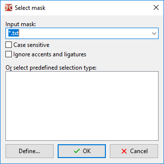
Die Schaltfläche Definieren... erlaubt es, eine neue Suchvorlage zu erzeugen.
Wenn im aktiven Panel das Ergebnis der Duplikatsuche geöffnet ist, arbeiten diese Befehle in einem besonderen Modus:
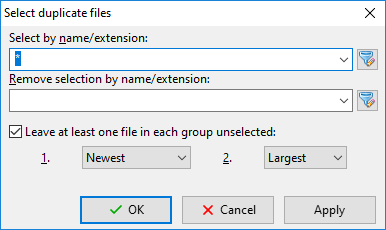
Nach Name/Erweiterung auswählen: – funktioniert genauso wie im üblichen Dialog zur Gruppenauswahl. Sie können außerdem Suchvorlagen verwenden ( ).
).
Auswahl nach Name/Erweiterung entfernen: – wird nach der vorherigen Option angewendet und schließt die entsprechenden Dateien von der Auswahl aus.
Mindestens eine Datei in jeder Gruppe unausgewählt lassen: – Eine nützliche Option, wenn Sie doppelte Dateien entfernen, aber in jeder Gruppe mindestens eine Datei behalten möchten. Zuerst wendet Double Commander Methode Nummer 1 an: Verglichen werden Änderungsdatum (neuestes, ältestes), Größe (größte, kleinste) oder Position in der Gruppe (erste oder letzte Datei in der Gruppe). Wenn keine Datei die Bedingung erfüllt (zum Beispiel haben alle Dateien dasselbe Änderungsdatum oder dieselbe Größe), wird Methode 2 angewendet: In diesem Fall werden Änderungsdatum oder Größe verglichen.
Die Schaltfläche Anwenden erlaubt es, das Ergebnis sofort zu sehen, ohne dieses Dialogfenster zu schließen.
Der dritte und der vierte Menüeintrag sind Alles auswählen (interner Befehl cm_MarkMarkAll) und Alles abwählen (interner Befehl cm_MarkUnmarkAll). Sie ermöglichen es, alle Einträge des Panels schnell auszuwählen oder abzuwählen.
Der fünfte Eintrag ist Auswahl umkehren (interner Befehl cm_MarkInvert). Er macht aktuell ausgewählte Dateien zu nicht ausgewählten und umgekehrt.
Der sechste und der siebte Eintrag Alle mit derselben Erweiterung auswählen (interner Befehl cm_MarkCurrentExtension) und Alle mit derselben Erweiterung abwählen (interner Befehl cm_UnmarkCurrentExtension). Diese Funktionen helfen dabei, Dateien mit derselben Erweiterung wie die Datei unter dem Cursor auszuwählen und abzuwählen.
Der achte und der neunte Eintrag Auswahl speichern (interner Befehl cm_SaveSelection) und Auswahl wiederherstellen (interner Befehl cm_RestoreSelection). Der erste Befehl speichert die aktuell ausgewählten Einträge in einem internen Puffer. Später kann der zweite Befehl verwendet werden, um dieselben Einträge wieder auszuwählen, die zuvor ausgewählt waren.
Der zehnte und der elfte Eintrag Auswahl in Datei speichern (interner Befehl cm_SaveSelectionToFile) und Auswahl aus Datei laden (interner Befehl cm_LoadSelectionFromFile). Wie die vorherigen Befehle, aber mit einer einfachen Textdatei (ein Dateiname je Zeile).
Der zwölfte Eintrag ist Auswahl aus der Zwischenablage laden (interner Befehl cm_LoadSelectionFromClip). Wählt Dateien und Ordner anhand der Liste aus der Zwischenablage aus (ein Dateiname je Zeile).
Der dreizehnte und der vierzehnte Eintrag Dateiname(n) in die Zwischenablage kopieren (interner Befehl cm_CopyNamesToClip) und Dateiname(n) mit vollständigem Pfad kopieren (interner Befehl cm_CopyFullNamesToClip). Der erste Befehl kopiert die Liste der ausgewählten Dateien in die Zwischenablage, der zweite kopiert sie ebenfalls, aber mit vollständigen Dateipfaden.
Der fünfzehnte Eintrag ist Alle angezeigten Spalten kopieren (interner Befehl cm_CopyFileDetailsToClip). Kopiert Dateiinformationen der ausgewählten Einträge in die Zwischenablage: eine Datei je Zeile, und der Inhalt der Spalten wird durch Tabulatoren getrennt.
Der letzte Eintrag ist Verzeichnisse vergleichen (interner Befehl cm_CompareDirectories). Wählt die Einträge im aktiven und im inaktiven Panel aus, die im gegenüberliegenden Panel nicht vorhanden sind (standardmäßig werden nur Dateien ausgewählt). Dateien mit denselben Namen werden nach dem Änderungsdatum verglichen, danach werden die neueren Dateien ausgewählt.
Der erste Eintrag ist Suchen (interner Befehl cm_Search). Dieses Werkzeug ist dafür gedacht, nach Dateien und Ordnern mit den angegebenen Kriterien zu suchen. Es kann auch verwendet werden, um nach Dateiinhalt zu suchen. Eine ausführliche Beschreibung steht auf dieser Seite.
Neue Suchinstanz... (interner Befehl cm_AddNewSearch) – öffnet eine neue Instanz des Suchdialogfensters mit den Standardeinstellungen. Sie erlaubt es außerdem, eine neue Suchinstanz zu starten, um nach etwas anderem zu suchen, während eine lange Suche läuft.
Aktuelle Suchinstanzen anzeigen (interner Befehl cm_ViewSearches) – zeigt ein Fenster mit einer Liste der Suchinstanzen mit kurzen Angaben (Status, Anzahl der gefundenen Dateien, ob abgeschlossen, und Dateimaske) und der Möglichkeit, zu einer von ihnen zu wechseln.
Der vierte Eintrag ist Verzeichnis-Favoriten (interner Befehl cm_DirHotList). Dieser Befehl entspricht dem Drücken der Schaltfläche „*“.
Wenn wir diesen Eintrag wählen, erhalten wir ein Popup-Menü mit den Verzeichnis-Favoriten, in dem wir wählen können:
den aktuellen Pfad des aktiven Panels auf ein vorkonfiguriertes Verzeichnis aus einer von Ihnen erstellten Liste umschalten;
ein neues Lesezeichen hinzufügen: aktuelles Verzeichnis, ausgewähltes Verzeichnis (mehr als eines, wenn nötig) oder Verzeichnis unter dem Cursor;
vorhandene Lesezeichen konfigurieren.
Wie Sie sie verwenden und konfigurieren, steht auf der eigenen Hilfeseite Verzeichnis-Favoriten.
Verzeichnisse synchronisieren... (interner Befehl cm_SyncDirs) öffnet das Werkzeug zur Verzeichnissynchronisierung: Die Verzeichnisse des linken und des rechten Panels werden durchsucht, Sie sehen die Unterschiede in ihrem Inhalt und können sie angleichen.
Terminal starten (interner Befehl cm_RunTerm) öffnet ein Terminal im aktuellen Verzeichnis (Einstellungen unter Werkzeuge).
Internen Befehl ausführen (interner Befehl cm_DoAnyCmCommand) öffnet ein Fenster mit einer Liste aller internen Befehle und ihrer Beschreibung. Die Befehle sind nach Kategorie gruppiert, Schnellfilter und Sortierung stehen zur Verfügung: Sie können den ausgewählten Befehl ausführen, seinen Namen kopieren oder die Seite Interne Befehle öffnen (einige Befehle unterstützen Parameter).
Flache Ansicht (interner Befehl cm_FlatView) durchsucht alle Unterverzeichnisse im aktuellen Verzeichnis des aktiven Panels und zeigt alle Dateien in einer Liste. Die Suche lässt sich mit der Taste Esc abbrechen, ein erneuter Aufruf des Befehls kehrt in den normalen Modus zurück. Wenn der Cursor auf einer Datei steht, setzt Double Commander den Cursor beim Zurückkehren in den normalen Modus auf diese Datei.
Zusätzlich steht der Befehl cm_FlatViewSel zur Verfügung, der ebenfalls alle Dateien in einer Liste zeigt, aber nur für ausgewählte Dateien und Verzeichnisse. Ein erneuter Aufruf dieses Befehls stellt den normalen Modus nur im Basisverzeichnis wieder her.
VFS-Liste öffnen (interner Befehl cm_OpenVirtualFileSystemList) öffnet eine Liste der hinzugefügten Dateisystem-Plugins (WFX-Plugins), die eigene Dateisysteme verwenden oder Zugriff auf andere Dateisysteme und Geräte bieten (lokal oder entfernt). Sowie virtuelle Ordner:
Computer – enthält eine Liste normaler Laufwerke mit einem Laufwerksbuchstaben und Geräte ohne Laufwerksbuchstaben (zum Beispiel USB-Geräte, die über das MTP-Protokoll verbunden sind, also Smartphones, Tablets oder Abspielgeräte). Nur Windows.
iCloud – Zugriff auf den Inhalt von iCloud Drive. Zusätzlich können Sie die Anwendungsordner auswählen, die in diesem virtuellen Ordner verfügbar sein werden. Nur macOS.
Linux – Liste aller Linux-Distributionen, die Sie zu WSL hinzugefügt haben, und ihrer Wurzeldateisysteme (Windows 10 und neuer).
Network – Zugriff auf freigegebene Netzwerkressourcen (Windows) oder auf Netzwerkressourcen über Gio (Linux).
Recycle Bin – Zugriff auf Dateien, die in den Papierkorb gelöscht wurden.
(Die Liste ist alphabetisch sortiert und hängt von den Spracheinstellungen des Systems und des Programms ab.)
Panels tauschen (interner Befehl cm_Exchange) tauscht das linke und das rechte Dateipanel mit allen geöffneten Registerkarten.
Ziel = Quelle (interner Befehl cm_TargetEqualSource) öffnet dasselbe Verzeichnis im inaktiven Dateipanel.
Belegten Speicherplatz anzeigen berechnet die Gesamtgröße aller Dateien in den Unterordnern des aktuellen Verzeichnisses und zeigt sie an. Der Text <DIR> in der Spalte Größe des aktiven Panels wird durch die Gesamtgröße ersetzt.
Netzwerkverbindung herstellen – öffnet eine Liste der hinzugefügten Dateisystem-Plugins (WFX-Plugins), wie der Befehl VFS-Liste öffnen im Menü „Befehle“.
Netzwerkverbindung trennen – schließt die aktive Netzwerkverbindung. Double Commander schließt eine der folgenden Verbindungen (in absteigender Priorität):
die im aktiven Panel geöffnete;
die im inaktiven Panel geöffnete;
die zuletzt erzeugte.
Die nächsten Einträge gelten nur für Windows.
Netzlaufwerk verbinden und Netzlaufwerk trennen – rufen die Systemdialoge von Windows auf, um Netzlaufwerke zu verbinden und zu trennen.
Namen mit UNC-Pfad kopieren – kopiert den vollständigen Dateinamen im Netzwerk in die Zwischenablage: Servername, Freigabename und relativer Dateipfad.
Diese Gruppe verwaltet die Dateipanels mit Registerkarten.
Neue Registerkarte (interner Befehl cm_NewTab) – fügt eine neue Registerkarte im aktiven Panel hinzu (mit dem aktuellen Pfad) und wechselt zu ihr.
Registerkarte umbenennen (interner Befehl cm_RenameTab) – erlaubt es, den Titel der aktuellen Registerkarte zu ändern.
Ordner in einer neuen Registerkarte öffnen (interner Befehl cm_OpenDirInNewTab) – öffnet eine neue Registerkarte für das Verzeichnis unter dem Cursor, wechselt aber nicht zu ihr (das heißt im Hintergrund).
Registerkarte schließen (interner Befehl cm_CloseTab) – schließt die aktive Registerkarte und schaltet das Panel auf die nächste Registerkarte (oder die vorherige, wenn Sie die letzte Registerkarte schließen).
Alle Registerkarten schließen (interner Befehl cm_CloseAllTabs) – schließt alle inaktiven Registerkarten. Wenn darunter gesperrte Registerkarten sind, wird um Bestätigung gebeten.
Doppelte Registerkarten schließen (interner Befehl cm_CloseDuplicateTabs) – Double Commander prüft die Liste der geöffneten Registerkarten und schließt doppelte Registerkarten (für jedes Panel getrennt!). Es gelten die folgenden Prioritätsregeln:
gesperrte Registerkarten haben höhere Priorität;
eine umbenannte Registerkarte wird geschlossen, wenn es eine gesperrte Registerkarte mit demselben Verzeichnis gibt;
wenn es eine umbenannte Registerkarte mit demselben Verzeichnis wie eine andere, nicht umbenannte Registerkarte gibt, wird die zweite geschlossen;
eine gesperrte umbenannte Registerkarte hat Vorrang vor einer nicht umbenannten, deshalb wird die zweite geschlossen;
wenn zwei Registerkarten dieselbe Priorität haben, wird die erste behalten (von links gezählt).
Optionen der Registerkarte – Über dieses Untermenü können Sie den Zustand der Registerkarte ändern:
Normal (interner Befehl cm_SetTabOptionNormal) – macht die Registerkarte normal: die üblichen Registerkarten, die Double Commander standardmäßig erzeugt.
Gesperrt (interner Befehl cm_SetTabOptionPathLocked) – sperrt die Registerkarte; der Versuch, innerhalb dieser Registerkarte in ein anderes Verzeichnis zu wechseln, fordert dazu auf, es in einer neuen Registerkarte zu öffnen.
Gesperrt, Verzeichniswechsel erlaubt (interner Befehl cm_SetTabOptionPathResets) – wenn Sie eine Registerkarte auf diese Weise sperren, können Sie innerhalb dieser Registerkarte in ein anderes Verzeichnis wechseln, aber nach dem Wechsel zu einer anderen Registerkarte (oder nach einem Neustart von Double Commander) kehrt die Registerkarte zum ursprünglichen Verzeichnis der gesperrten Registerkarte zurück.
Gesperrt, Verzeichnisse werden in neuen Registerkarten geöffnet (interner Befehl cm_SetTabOptionDirsInNewTab) – Wenn Sie versuchen, ein Verzeichnis innerhalb des Panels zu betreten, wird es in einer neuen Registerkarte geöffnet.
Die übrigen Einträge dieses Untermenüs tun dasselbe, aber für alle Registerkarten auf einmal.
Hinweis: Standardmäßig erlaubt Double Commander nicht, eine gesperrte Registerkarte ohne Bestätigung zu schließen (Schließen gesperrter Registerkarten bestätigen im Einstellungsabschnitt Ordner-Registerkarten).
Zur nächsten Registerkarte wechseln (interner Befehl cm_NextTab) und Zur vorherigen Registerkarte wechseln (interner Befehl cm_PrevTab) – wechseln entsprechend zur Registerkarte rechts (nächste) und zur Registerkarte links (vorherige).
Registerkarten in Datei speichern (interner Befehl cm_SaveTabs) und Registerkarten aus Datei laden (interner Befehl cm_LoadTabs) – Die Namen der aktuellen Registerkarten und die zugehörigen Verzeichnisse lassen sich in einer .tab-Datei speichern und aus einer solchen Datei laden.
Aktuelle Registerkarten als neue Favoriten-Registerkarten speichern (interner Befehl cm_SaveFavoriteTabs) – speichert die aktuell geöffneten Registerkarten im Satz der Favoriten-Registerkarten. Später können Sie diese gespeicherte Einrichtung auf Anfrage über den nächsten Menüeintrag wieder laden.
Registerkarten aus Favoriten-Registerkarten laden (interner Befehl cm_LoadFavoriteTabs) – zeigt ein Popup-Menü mit der Möglichkeit, einen der zuvor gespeicherten Sätze von Registerkarten auszuwählen.
Die letzten beiden Einträge dienen dem schnellen Sprung zu den Einstellungsabschnitten Ordner-Registerkarten und Favoriten-Registerkarten.
Dieses Menü enthält eine Liste Ihrer gespeicherten Favoriten-Registerkarten und einige Befehle für die Arbeit mit ihnen.
Favoriten-Registerkarten sind gespeicherte Sätze von Registerkarten, die nach für Sie günstigen Kriterien gruppiert sind (Arbeit, Projekte, Hobbys und so weiter). Sie erlauben es, alle nötigen Verzeichnisse auf einmal in Registerkarten zu öffnen.
Aktuelle Registerkarten als neue Favoriten-Registerkarten speichern (interner Befehl cm_SaveFavoriteTabs) – speichert die aktuell geöffneten Registerkarten im Satz der Favoriten-Registerkarten.
In den zuletzt geladenen Favoriten-Registerkarten erneut speichern (interner Befehl cm_ResaveFavoriteTabs) – speichert die aktuelle Registerkartenkonfiguration erneut über den zuletzt geladenen Eintrag der Favoriten-Registerkarten.
Zuletzt geladene Favoriten-Registerkarten neu laden (interner Befehl cm_ReloadFavoriteTabs) – lädt die zuletzt geladene Einrichtung der Favoriten-Registerkarten erneut, das heißt, dieser Befehl stellt einen gespeicherten Satz „wie er ist“ wieder her.
Der nächste Eintrag Konfiguration der Favoriten-Registerkarten dient dem schnellen Sprung zum Einstellungsabschnitt Favoriten-Registerkarten.
Um die zuletzt geladenen Favoriten-Registerkarten zu entladen, verwenden Sie den Befehl cm_LoadFavoriteTabs mit setup= (fügen Sie eine Schaltfläche zur Werkzeugleiste oder ein Tastenkürzel hinzu). Die aktuell geöffneten Registerkarten bleiben unberührt, dieser Befehl entlädt nur den Namen des verwendeten Satzes der Favoriten-Registerkarten aus dem Speicher, und Double Commander arbeitet danach wie gewohnt weiter.
Verwaltet den angezeigten Inhalt der Dateipanels.
Die ersten drei Einträge erlauben es, die Ansicht der Dateiliste umzuschalten: Kurzansicht (interner Befehl cm_BriefView), Vollständig (interner Befehl cm_ColumnsView) und Miniaturansichten (interner Befehl cm_ThumbnailsView). Einzelheiten stehen unten.
Schnellansicht (interner Befehl cm_QuickView) – öffnet die Datei im Betrachterprogramm, der Inhalt des ausgewählten Eintrags wird aber im gegenüberliegenden Panel angezeigt (statt in einem eigenen Fenster). Weitere Einzelheiten stehen hier.
Baumansicht (interner Befehl cm_TreeView) – zeigt den Verzeichnisbaum für das aktive Dateipanel. Der interne Befehl cm_FocusTreeView wechselt den Fokus zwischen der aktuellen Dateiliste und dem Baum (Tastenkürzel standardmäßig Shift+Tab).
Die nächsten fünf Einträge: Nach Name sortieren (interner Befehl cm_SortByName), Nach Erweiterung sortieren (interner Befehl cm_SortByExt), Nach Größe sortieren (interner Befehl cm_SortBySize), Nach Datum sortieren (interner Befehl cm_SortByDate), Nach Attributen sortieren (interner Befehl cm_SortByAttr) – erlauben es, verschiedene Sortierreihenfolgen für die Dateien zu wählen. Sie können außerdem mit der linken Maustaste auf die Spaltenköpfe klicken, um die Sortierreihenfolge zu ändern.
Reihenfolge umkehren (interner Befehl cm_ReverseOrder) – kehrt die Sortierreihenfolge für das aktive Panel um.
Aktualisieren (interner Befehl cm_Refresh) – Double Commander liest den Inhalt des Verzeichnisses im aktiven Panel neu ein.
Versteckte/Systemdateien anzeigen (interner Befehl cm_ShowSysFiles) – steuert die Anzeige von Dateien und Ordnern, die das Attribut „versteckt“ oder „System“ haben (Windows) oder deren Name mit einem Punkt beginnt (Linux und andere Unix-ähnliche Systeme). Dasselbe wie die Einstellung in der Konfiguration – System- und versteckte Dateien anzeigen.
Horizontale Panelanordnung (interner Befehl cm_HorizontalFilePanels) – legt die Position der Dateipanels fest: zwei senkrechte, links/rechts angeordnet, oder zwei waagerechte, oben/unten angeordnet.
Operationsanzeige (interner Befehl cm_OperationsViewer) – zeigt ein Fenster mit einer Liste der Dateioperationen. Sie können die Reihenfolge der Operationen in der Warteschlange ändern, eine Aufgabe anhalten oder pausieren.
Der erste Eintrag ist Einstellungen (interner Befehl cm_Options), er öffnet das Fenster „Einstellungen“, die Beschreibung steht auf der eigenen Hilfeseite.
Weitere Einträge: schneller Sprung zu einigen Einstellungsabschnitten (Verzeichnis-Favoriten, Favoriten-Registerkarten, Dateizuordnungen, Ordner-Registerkarten und Archivprogramme) und die Befehle Position speichern und Einstellungen speichern.
Hier erhalten Sie Hilfeinformationen (diese Dokumentation) und Informationen über das Programm:
Inhalt – öffnet die Indexseite der Hilfe.
Tastatur – öffnet die Seite der Tastenkürzel.
Double-Commander-Webseite besuchen – zur Projektstartseite gehen, wenn Sie online sind.
Über – zeigt Informationen über die Programmversion und die Entwickler.

Die Werkzeugleiste enthält Schaltflächen zum Ausführen interner Befehle und zum Starten unserer Anwendungen.
Eine Standardkonfiguration wird vorgeschlagen, aber wir werden sie mit Sicherheit alle jeweils an unsere Bedürfnisse anpassen, denn sie ist wahrscheinlich der am stärksten anpassbare Teil von Double Commander.
Deshalb gibt es dafür eine eigene Seite unter diesem Link.
Die Laufwerksschaltflächenleiste hilft Ihnen, das Laufwerk schnell mit einem Mausklick zu wechseln. Ein Klick mit der mittleren Maustaste (Mausrad) öffnet das Laufwerk in einer neuen Registerkarte im aktiven Panel. Es gibt zwei Arten, ein Laufwerk zu öffnen, siehe die Beschreibung des Parameters Beim Laufwerkswechsel immer ins Stammverzeichnis eines Laufwerks wechseln.
Ein Rechtsklick zeigt das Kontextmenü, das Operationen wie Einhängen/Aushängen, Formatieren usw. enthält (abhängig vom Betriebssystem und vom Laufwerkstyp).
Die letzte Schaltfläche ist VFS-Liste öffnen.
Hilft beim Wechseln des Laufwerks, enthält außerdem zusätzliche Angaben (Größe, freier Speicherplatz) und Navigationsschaltflächen – « * \ .. ~ < ».
Die internen Befehle sind cm_LeftOpenDrives für das linke Panel und cm_RightOpenDrives – für das rechte Panel. Standard-Tastenkürzel: Alt+F1 und Alt+F2, sie funktionieren aber in den meisten Linux-Arbeitsumgebungen nicht (öffnen Sie einfach den Einstellungsabschnitt Tasten > Tastenkürzel und ersetzen Sie sie).
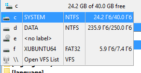
Der interne Befehl cm_SrcOpenDrives zeigt dieses Menü für das aktive Panel.
Es gibt zwei Arten, ein Laufwerk zu öffnen, siehe die Beschreibung des Parameters Beim Laufwerkswechsel immer ins Stammverzeichnis eines Laufwerks wechseln.
Zusätzliche Navigationsschaltflächen:
"*" – zeigt die Lesezeichen-Favoriten, Einzelheiten stehen auf der eigenen Hilfeseite Verzeichnis-Favoriten;
"\" oder "/" – zum Stammverzeichnis des aktuellen Laufwerks (Windows) oder zur Wurzel des Dateisystems (Linux und andere Unix-ähnliche Systeme). Ausnahmen:
".." – zum übergeordneten Verzeichnis;
"~" – zu Ihrem Benutzerverzeichnis;
"<" und ">" – die Befehle cm_LeftEqualRight und cm_RightEqualLeft.

Zeigt Registerkarten an. Klicken Sie mit der linken Maustaste auf die Registerkarten, oder Sie können die Tastatur verwenden, um zwischen Registerkarten zu wechseln (standardmäßig Ctrl+Tab und Ctrl+Shift+Tab). Um die Reihenfolge der Registerkarten zu ändern, verwenden Sie Ziehen und Ablegen oder die Befehle cm_MoveTabLeft und cm_MoveTabRight.
Sie können Registerkarten vor dem Schließen oder vor einem Verzeichniswechsel schützen, die verfügbaren Zustände der Registerkarten sind im Unterabschnitt „Registerkarten“ beschrieben. Gesperrte Registerkarten sind mit einem Sternchen markiert (wenn Gesperrte Registerkarten mit einem Sternchen * anzeigen aktiviert ist).
Zeigt das im Dateipanel geöffnete Verzeichnis an.
Ein Klick mit der linken Maustaste auf diese Verzeichnisleiste klappt einen Verzeichnisverlauf auf (interner Befehl cm_DirHistory), der es erlaubt, schnell zu früheren Verzeichnissen zurückzukehren:
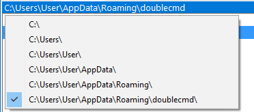
Ein Klick mit der rechten Maustaste auf die Verzeichnisleiste erlaubt es, den Pfadnamen in die Zwischenablage zu kopieren oder einen neuen Pfad von Hand einzugeben. Sie können die Tastatur statt der Maus verwenden, legen Sie einfach ein Tastenkürzel für den Befehl cm_EditPath fest oder verwenden Sie, wenn nichts ausgewählt ist und der Cursor auf dem ersten Eintrag („..“) steht, die Tasten zum Umbenennen von Dateien (standardmäßig F2 oder Shift+F6). Double Commander unterstützt die Pfadvervollständigung und schlägt ein Verzeichnis oder mehrere Verzeichnisse vor, die zum bereits eingegebenen Teil des Pfads passen.
Umgebungsvariablen werden unterstützt, unter Linux und anderen Unix-ähnlichen Betriebssystemen können Sie außerdem das Tilde-Zeichen „~“ verwenden, um das Benutzerverzeichnis des aktuellen Benutzers anzugeben.
Ein Doppelklick oder ein Klick mit der mittleren Maustaste klappt die Verzeichnis-Favoriten auf. Wir können die Doppelklick-Aktion durch einen Befehl zum Bearbeiten des Pfads ersetzen, siehe die Beschreibung des Parameters <DoubleClickEditPath>.
Es ist inzwischen auch möglich, auf Teile der Verzeichnisleiste zu klicken, um in der Verzeichnisstruktur schnell zurückzugehen. Sehr praktisch, wenn Sie viele Ebenen zu einem übergeordneten Verzeichnis zurück möchten. Das ist als Navigation mit „Brotkrumen“ bekannt.
Zeigt die Spaltennamen. Ein Linksklick sortiert die Dateien nach der Spalte. Ein kleiner Pfeil links vom Kopftext zeigt die Sortierrichtung. Sie können die Sortierreihenfolge außerdem für mehrere Spalten festlegen, indem Sie auf den Kopf klicken, während Sie die Taste Ctrl gedrückt halten. Versuchen Sie zum Beispiel, die Dateien nach der Erweiterung zu sortieren, und klicken Sie dann mit der Taste Ctrl auf den Kopf „Datum“: Jeder Dateityp wird unabhängig von den anderen nach dem Datum sortiert.
Die Spaltenkopfleiste erlaubt es, die Breite der Spalten mit der Maus zu ändern, einfach durch Ziehen der Ränder. Standardmäßig ändert DC sie für beide Panels und speichert einen neuen Wert für die nächsten Starts (siehe <AutoSaveWidth>).
Ein Rechtsklick zeigt ein Menü zum Wechseln und Bearbeiten des benutzerdefinierten Spaltensatzes.
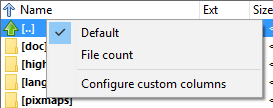
Standard, Dateianzahl – vorhandene Stile.
Benutzerdefinierte Spalten konfigurieren – öffnet den Abschnitt Dateiansichten > Spalten > Benutzerdefinierte Spalten.
Die Dateipanels zeigen die Namen der Dateien im aktuellen Verzeichnis. Double Commander kann die Dateipanels senkrecht anordnen (links/rechts, Standard) oder waagerecht (oben/unten), verwenden Sie den Eintrag Horizontale Panelanordnung im Menü Anzeige oder Ctrl+Shift+H.
Standardmäßig ist die Breite beider Panels gleich. Die Größe wird als Prozentsatz für das linke (oder obere) Panel festgelegt, es gibt mehrere Möglichkeiten, sie zu ändern: Ziehen Sie einfach die Paneltrennung mit der Maus (das Programm zeigt die Breite des linken Panels in der Kurzinfo), verwenden Sie das Menü der rechten Maustaste mit festen Größenverhältnissen (20/80, 30/70, 40/60, 50/50, 60/40, 70/30, 80/20) oder den Befehl cm_PanelsSplitterPerPos.
Allgemeine Parameter für die Anzeige des Inhalts der Dateipanels sind in den Einstellungsabschnitten Dateiansichten und Dateiansichten extra zusammengefasst.
Es stehen mehrere Ansichtsarten der Dateiliste zur Verfügung.
Vollständig – eine Datei je Zeile, mit Standardspalten oder von Ihnen festgelegten Spalten. Statt der Größe zeigt Double Commander bei Ordnern und Links <DIR> und <LNK>. Optionen stehen im Einstellungsabschnitt Spalten, Spaltensätze können Sie im Abschnitt Benutzerdefinierte Spalten hinzufügen oder ändern. Die Spaltenansicht wird in den meisten Abbildungen verwendet.
Kurzansicht – nur der Name der Dateien. Wenn möglich, mehr als eine Spalte. Optionen stehen im Einstellungsabschnitt Dateiansichten > Kurz.
Miniaturansichten – Dateien werden als kleine Bilder angezeigt. Wenn möglich, in mehr als einer Spalte. Die Größe der Miniaturansichten können Sie im Einstellungsabschnitt Verschiedenes ändern.
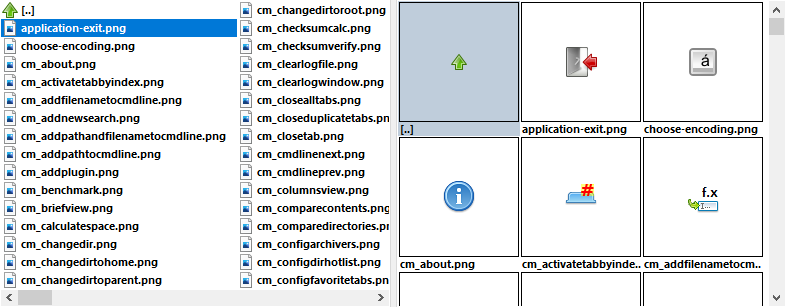
Double Commander kann die Möglichkeiten des Betriebssystems nutzen, um Miniaturansichten zu erzeugen, oder sie selbst erzeugen. Sie können wählen, ob der Zwischenspeicher der Miniaturansichten auf die Festplatte gespeichert werden darf oder nur im Speicher bleibt, bis das Programm geschlossen wird (siehe Verschiedenes).
Die Verfahren zum Erzeugen von Miniaturansichten und die unterstützten Dateiformate hängen von der Familie des Betriebssystems ab.
Windows: Double Commander verwendet die Möglichkeiten des Betriebssystems (wie im Windows-Explorer), WLX-Plugins mit Unterstützung für Miniaturansichten und ergänzt die Liste um Bildformate, die der eingebaute Dateibetrachter unterstützt.
macOS: Double Commander verwendet die Möglichkeiten des Betriebssystems (Quick Look) und ergänzt die Liste um Bildformate, die der eingebaute Dateibetrachter unterstützt. Das Programm unterstützt außerdem das OpenDocument-Format (.odt, .ods, .odp, .odg) und versucht, Miniaturansichten zu erzeugen (wenn Dateien „Thumbnails/thumbnail.png“ enthalten), bevor die Quick-Look-API verwendet wird.
Linux und andere Unix-ähnliche Systeme: Double Commander erzeugt Miniaturansichten für die folgenden Formate:
Bildformate, die der eingebaute Dateibetrachter unterstützt;
das Bildformat XCF (wenn die Bibliothek ImageMagick verfügbar ist);
einige verbreitete Videoformate (wenn die Bibliothek FFmpegthumbnailer verfügbar ist): .avi, .flv, .mkv, .mov, .mp4, .mpeg, .mpg, .vob, .webm, .wmv;
eingebettete Coverbilder von MP3-Dateien;
das OpenDocument-Format (wenn Dateien „Thumbnails/thumbnail.png“ enthalten): .odt, .ods, .odp, .odg.
Double Commander erzeugt außerdem Miniaturansichten für Textdateien (einfacher Text und andere nicht binäre Dateien). Miniaturansichten dieser Dateien werden nicht auf die Festplatte gespeichert.
Double Commander kann Dateisymbole links neben ihren Namen anzeigen (standardmäßig aktiviert), die Dateitypen und Zuordnungen (System oder intern) zu Programmen zeigen. DC verwendet Symbole aus seinem eigenen Symboldesign und/oder gemäß den Systemeinstellungen (siehe den Einstellungsabschnitt Symbole).
Das Programm erlaubt es außerdem, Dateitypen anzugeben, deren Namen eine andere Farbe haben sollen, weitere Einzelheiten stehen im Einstellungsabschnitt Farben > Dateitypen.
Die aktuelle Datei wird von einem feinen Rechteck umgeben, mit oder ohne Farbfüllung, die Namen der ausgewählten Dateien werden rot angezeigt. Die verwendeten Farben und das Aussehen des Cursors können Sie im Einstellungsabschnitt Farben > Dateipanels ändern.
Double Commander kann eine Kurzinfo anzeigen, wenn der Mauszeiger über einer Datei steht, Einzelheiten stehen im Einstellungsabschnitt Kurzinfos.
Es gibt mehrere Möglichkeiten, Dateien auszuwählen.
Um eine Datei oder ein Verzeichnis unter dem Cursor auszuwählen, drücken Sie einfach die Taste Insert (nach der Auswahl bewegt Double Commander den Cursor automatisch zur nächsten Datei) oder die Taste Space. Wenn Sie ein Verzeichnis mit der Taste Space auswählen, berechnet das Programm die Gesamtgröße des Verzeichnisses und zeigt sie in der passenden Spalte an.
Sie können die linke oder die rechte Maustaste zum Auswählen von Dateien wählen:
Linke Taste – Die Maus arbeitet wie im Windows-Explorer, die rechte Taste dient nur dazu, das Kontextmenü zu öffnen. In diesem Modus können Sie alle ausgewählten Dateien abwählen, indem Sie auf den Namen einer nicht ausgewählten Datei oder auf den Eintrag „..“ klicken. Sie können außerdem den passenden internen Befehl verwenden (siehe unten).
Rechte Taste – Die linke Taste arbeitet genauso, die rechte Taste erlaubt es, Dateien durch einen Klick auf den Dateinamen auszuwählen. Ein etwas längeres Halten der rechten Taste ruft das Kontextmenü der Dateien auf. Um mehrere aufeinanderfolgende Dateien auszuwählen, können Sie die rechte Maustaste gedrückt halten und den Mauszeiger über die Dateiliste bewegen. Um alle ausgewählten Dateien abzuwählen, können Sie den passenden internen Befehl verwenden (siehe unten).
Sie können einen Mausklick mit Modifikatortasten verwenden: Ctrl (die nächste Datei auswählen, irgendwo in der Liste) und Shift (mehrere aufeinanderfolgende Dateien zur Auswahl hinzufügen). Um mehrere aufeinanderfolgende Dateien auszuwählen, können Sie Shift gedrückt halten und die Tasten nach oben und unten verwenden.
Es ist auch möglich, Dateien durch einen Klick auf ihre Symbole auszuwählen, diese Funktion können Sie im Einstellungsabschnitt Maus aktivieren. Gleichzeitig setzt Double Commander den Cursor auf die ausgewählte Datei, wie bei einem Mausklick mit der Taste Ctrl. In der Miniaturansicht funktioniert das, wenn Sie auf den linken Teil (1/4 oder 25 %) des Bildes klicken, sodass Sie den Cursor ohne Auswahl setzen können, indem Sie auf den rechten Teil des Bildes klicken. Diese Funktion ist praktisch, um eine große Anzahl von Dateien abzuwählen: Klicken Sie auf das Symbol einer beliebigen ausgewählten Datei und dann auf ihren Namen.
Sie können die Auswahl mit der Maus vollständig deaktivieren: Die linke Taste setzt nur den Cursor, die rechte Taste ruft das Kontextmenü auf.
Für das Auswählen und Abwählen von Dateien stehen besondere Befehle zur Verfügung, die verschiedene Bedingungen erlauben: nach Name oder einem Teil des Namens, Dateityp, Attributen und mehr. Einige davon wurden dem Menü Markieren hinzugefügt, Sie können Tastenkürzel zuweisen oder Schaltflächen zur Werkzeugleiste hinzufügen. Oder öffnen Sie ein Fenster mit einer Liste und Beschreibung aller internen Befehle (interner Befehl cm_DoAnyCmCommand, standardmäßig Shift+F12) und gehen Sie zur Kategorie Markieren.
Double Commander unterstützt die Möglichkeit, Dateien mit der Maus zu ziehen und abzulegen (das heißt bei gedrückter linker Maustaste) in die Fenster externer Anwendungen (zum Beispiel einen Text- oder Grafikeditor oder einen Betrachter), auf die Werkzeugleiste und beim Kopieren/Verschieben von Dateien zwischen Verzeichnissen. Wenn die Aktion möglich ist, wird das Symbol „+“ neben dem Mauszeiger angezeigt.
Wenn eine Datei auf eine leere Stelle der Werkzeugleiste gezogen wird, wird eine Schaltfläche mit einem externen Befehl erzeugt, die übergebene Datei wird als Befehl verwendet. Das Ziehen einer Datei auf eine Schaltfläche ist nur möglich, wenn es eine Schaltfläche mit einem externen Befehl ist: Der Befehl wird gestartet, und die Datei wird ihm als Startparameter übergeben (beachten Sie, dass in diesem Fall die Parameter des Schaltflächenbefehls ignoriert werden).
Für das Kopieren oder Verschieben von Dateien (mit der Taste Ctrl oder Shift) sind die folgenden Ziele möglich: das gegenüberliegende Dateipanel, ein beliebiger Ordner im aktiven oder inaktiven Panel (der Ordnername wird mit einem Rahmen hervorgehoben), das Verzeichnis einer beliebigen geöffneten Registerkarte (legen Sie die Dateien einfach auf dem Kopf der gewünschten Registerkarte ab). Verwenden Sie „..“, um Dateien in das übergeordnete Verzeichnis zu kopieren. Double Commander kann Dateien auch in ein Archiv kopieren, wenn das Hinzufügen von Dateien unterstützt wird. Sie können den Bestätigungsdialog aktivieren oder deaktivieren und die Standardaktion wählen (siehe die Beschreibung von <DefaultDropEffect>).
Ziehen mit der rechten Maustaste zeigt das Menü mit den folgenden Aktionen: Kopieren, Verschieben, Link erstellen (harter Link), Symlink erstellen und Abbrechen. Wenn mehrere Dateien ausgewählt sind, bietet Double Commander an, einen Link nur für die erste Datei in der Liste zu erzeugen.
Einen symbolischen Link können Sie mit Ctrl+Shift erzeugen.
Wenn Sie Dateien in das Fenster einer anderen Anwendung ziehen, verwendet Double Commander die Systemumsetzung von Ziehen und Ablegen. Mit der Taste Alt können Sie eine alternative Aktion aufrufen (zum Beispiel wird beim Ziehen einer Datei in das Fenster des Windows-Explorers eine Verknüpfung erzeugt statt die Datei zu kopieren).
Aussehen und Inhalt des Kontextmenüs von Dateien (das Menü der rechten Maustaste) hängen von der Familie des Betriebssystems ab. Unter Windows verwendet Double Commander das Systemkontextmenü (wie im Windows-Explorer) mit dem Untermenü „Aktionen“ (siehe unten), unter anderen Betriebssystemen erzeugt Double Commander ein eigenes Kontextmenü mit den typischen Aktionen. Wenn Sie den Auswahlmodus mit der rechten Maustaste bevorzugen, ist ein etwas längeres Halten der rechten Taste nötig, um dieses Menü aufzurufen. Sie können den internen Befehl cm_ContextMenu verwenden, um das Kontextmenü aufzurufen (standardmäßig Shift+F10).
Kontextmenü von Double Commander unter Linux und anderen Unix-ähnlichen Systemen:
Öffnen – Öffnet die Datei unter dem Cursor im Standardprogramm (es werden die System-Dateizuordnungen verwendet).
Das Untermenü Aktionen – enthält alle Aktionen, die der Dateizuordnung für Dateien mit der Erweiterung unter dem Cursor hinzugefügt wurden. Sie können außerdem einige zusätzliche Aktionen hinzufügen.
Das Untermenü Öffnen mit – enthält eine Liste der Anwendungen, die zum Öffnen einer Datei geeignet sind. Um die Liste unter macOS zu erhalten, verwendet Double Commander die Launch-Services-API, unter anderen Systemen folgt das Programm der Spezifikation Desktop-Menü.
Der zusätzliche Eintrag Andere...
macOS: öffnet eine Liste aller installierten Anwendungen.
Linux und andere Unix-ähnliche Systeme: öffnet das Fenster zur Anwendungsauswahl, Sie können eine Anwendung aus einer Liste aller verfügbaren Anwendungen wählen oder die Befehlszeile zum Öffnen der Datei von Hand angeben. Hier können Sie außerdem eine zusätzliche Systemzuordnung für den Dateityp speichern, eine neue hinzufügen oder die Standardanwendung ändern (Double Commander verwendet die Datei ~/.config/mimeapps.list, siehe Zuordnung zwischen MIME-Typen und Anwendungen).
Dienste – nur macOS, ein Gegenstück zum Systemuntermenü „Dienste“.
Teilen... – nur macOS, ein Gegenstück zum Systemuntermenü „Teilen“.
Hier packen... – ruft den Befehl zum Packen der ausgewählten Datei(en) auf, das aktuelle Verzeichnis wird als Zielverzeichnis verwendet.
Hier entpacken... – ruft den Befehl zum Entpacken der ausgewählten Datei auf, das aktuelle Verzeichnis wird als Zielverzeichnis verwendet. Dieser Eintrag wird nur hinzugefügt, wenn die Dateierweiterung in den Einstellungen der Archiv-Plugins oder externen Archivprogramme angegeben ist.
Aufruf grundlegender Dateioperationen: Verschieben (F6), Kopieren (F5), Löschen (F8), Umbenennen (F2).
Befehle zum Kopieren und Verschieben von Dateien über die Zwischenablage: Ausschneiden, Kopieren, Einfügen
Dateieigenschaften anzeigen – Zeigt das Fenster der Dateieigenschaften.
Ein Klick mit der rechten Maustaste auf eine leere Stelle im Dateipanel unter Linux und anderen Unix-ähnlichen Systemen ruft ein Menü mit den folgenden Einträgen auf:
Aktualisieren – der Befehl, den Inhalt des Verzeichnisses im Panel neu einzulesen.
Das Untermenü Sortieren nach – enthält Befehle zum Umschalten der Sortiermethode: nach Name, Dateierweiterung, Größe, Änderungsdatum oder Attributen. Hinzugefügt ist außerdem der Befehl Reihenfolge umkehren, der die Sortierrichtung umschaltet.
Einfügen – dient zum Kopieren und Verschieben von Dateien über die Zwischenablage.
Das Untermenü Neu – enthält Befehle zum Erzeugen eines Verzeichnisses (F7) und einer Textdatei (Shift+F4). Dieses Untermenü enthält außerdem Vorlagen für neue Dateien, wenn das Systemverzeichnis mit Vorlagen existiert und nicht leer ist (unter macOS nicht verfügbar).
Dateieigenschaften anzeigen – Zeigt das Eigenschaftenfenster des aktuellen Verzeichnisses.
Das Kontextmenü innerhalb eines geöffneten Archivs oder eines Dateisystem-Plugins (WFX) ist immer dasselbe und hängt nicht vom Betriebssystem ab:
Öffnen – Öffnet eine Datei im Standardprogramm, wie bei einem Doppelklick oder dem Drücken von Enter (es werden interne und System-Dateizuordnungen verwendet). Standardmäßig zeigt dieser Befehl innerhalb von Archiven das Eigenschaftenfenster der gepackten Datei (siehe Archivverwaltung), in dem Sie wählen können, eine Datei in einem zugeordneten Programm zu öffnen, Double Commander erlaubt es aber, das automatische Öffnen der Datei im zugeordneten Programm direkt zu konfigurieren (verwenden Sie <AutoExtractOpenMask>).
Ansehen – Öffnet die Datei im Dateibetrachter (F3).
Aufruf mehrerer Dateioperationen: Kopieren (F5), Umbenennen (F2) und Löschen (F8).
Dateieigenschaften anzeigen – Zeigt das Fenster der Dateieigenschaften. Der Inhalt hängt von den Möglichkeiten des virtuellen Dateisystems ab. Innerhalb von Archiven ist das das Eigenschaftenfenster der gepackten Datei (siehe Archivverwaltung).
Beachten Sie, dass nicht alle Dateioperationen in jedem Fall funktionieren. Wenn zum Beispiel ein Archivformat das Löschen von Dateien nicht unterstützt, blendet Double Commander den Menüeintrag Löschen aus.
Double Commander erlaubt es, Dateien direkt im Dateipanel umzubenennen. Es gibt mehrere Möglichkeiten, diese Operation aufzurufen: der interne Befehl cm_RenameOnly (standardmäßig F2 oder Shift+F6), der Klick mit der linken Maustaste oder der entsprechende Eintrag im Menü der rechten Maustaste.
Standardmäßig wählt Double Commander den Dateinamen vollständig aus, Sie können aber die Auswahl des Dateinamens ohne Erweiterung aktivieren. Wiederholtes Drücken des Tastenkürzels erlaubt es außerdem, den Dateinamen in Teilen auszuwählen, als Trennzeichen werden die folgenden Zeichen verwendet: Leerzeichen, Bindestrich, Unterstrich und Punkt. Ordnernamen werden immer vollständig ausgewählt.
Um die Änderung des Namens zu bestätigen, verwenden Sie die Taste Enter oder die Schaltfläche zur Bestätigung des Umbenennens rechts neben dem Eingabefeld. Um unbestätigte Änderungen abzubrechen (um den Bearbeitungsmodus zu verlassen), verwenden Sie die Taste Esc oder einen Mausklick außerhalb des Eingabefelds. Sie können einen Mausklick außerhalb des Eingabefelds verwenden, um das Umbenennen zu bestätigen (wie im Windows-Explorer), siehe die Beschreibung von <RenameConfirmMouse>.
Mit den Pfeilen nach oben und unten können Sie mehrere Dateien nacheinander umbenennen: Der neue Dateiname wird automatisch gespeichert, wenn Sie zum Bearbeiten des Namens der nächsten oder vorherigen Datei gehen. Um diesen Modus zu verlassen, verwenden Sie die oben beschriebenen Methoden zum Bestätigen oder Abbrechen der Operation.
Für das gruppenweise Umbenennen von Dateien steht das passende Werkzeug zur Verfügung.
Wenn das Werkzeug Schnellsuche/-filter verwendet wird, wird sein Panel am unteren Rand des Dateipanels angezeigt. Die Schnellsuche dient dazu, den aktuellen Inhalt des Dateipanels zu durchsuchen: Der Cursor wird auf die nächstpassende Datei gesetzt, und bei den Tasten up arrow und down arrow bewegt das Programm den Cursor im Kreis nur über Dateien, deren Namen den Bedingungen entsprechen. Der Schnellfilter blendet alle Dateinamen aus, die den Bedingungen nicht entsprechen (um den Filter zurückzusetzen, verwenden Sie die Taste Esc oder die Schaltfläche „X“).
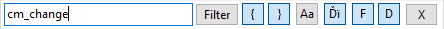
Filter – Umschalter Suche/Filter;
{ – der Name muss mit den zuerst eingegebenen Zeichen beginnen;
} – die letzten Zeichen vor einem eingegebenen Punkt „.“ müssen übereinstimmen;
Aa – Groß-/Kleinschreibung beachten;
Ďï – diakritische Zeichen und Ligaturen;
F – Dateien filtern;
D – Verzeichnisse filtern;
X – Schnellsuche ausschalten und das Panel schließen.
Double Commander unterstützt Pinyin (verwendet wird die Datei pinyin.tbl im Programmverzeichnis).
Die Art des Aufrufs des Panels der Schnellsuche/-filter können Sie im Einstellungsabschnitt Tasten festlegen oder die Befehle cm_QuickSearch und cm_QuickFilter verwenden.
Alle Parameter, die im Panel der Schnellsuche geändert wurden, bleiben für den nächsten Aufruf der Schnellsuche/-filter erhalten (bis das Programm geschlossen wird), das und die Standardwerte können Sie im Einstellungsabschnitt Schnellsuche/-filter ändern.
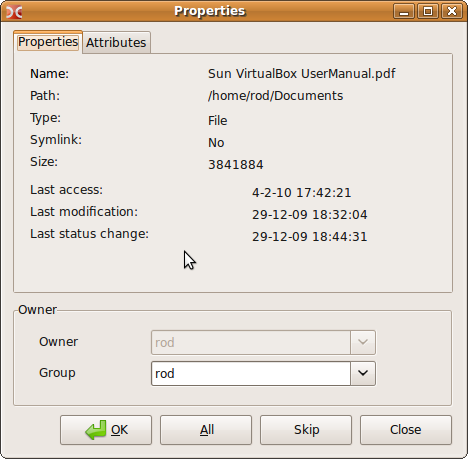
Zeigt einige Einzelheiten zum Inhalt des Dateipanels.
Wenn die Spaltenansicht eingestellt ist, zeigt die Statusleiste die Größe der ausgewählten Dateien und ihre Anzahl sowie die Gesamtzahl und die Größe der Dateien im Panel.
Wenn die Kurzansicht oder die Miniaturansicht eingestellt ist, werden hier der Dateiname unter dem Cursor, seine Größe, das Änderungsdatum und die Attribute angezeigt. Wenn Dateien ausgewählt sind, zeigt die Statusleiste dieselben Angaben wie in der Spaltenansicht.
Wenn die flache Ansicht (ohne Unterverzeichnisse) aktiviert ist, wird hier der Dateiname unter dem Cursor mit einem relativen Pfad angezeigt. Wenn Dateien ausgewählt sind, zeigt die Statusleiste dieselben Angaben wie in der Spaltenansicht.
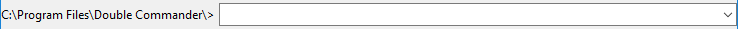
Dient dazu, Befehle von Hand einzugeben, Sie können schnell eine Datei im aktuellen Verzeichnis oder im PATH starten oder öffnen (mit zusätzlichen Parametern, wenn nötig).
Der Pfad zum aktiven Verzeichnis steht am Zeilenanfang (C:\Program Files\Double Commander\ in der Abbildung). Die Schaltfläche rechts mit einem Pfeil öffnet den Verlauf der eingegebenen Befehle. Verwenden Sie Shift+Del, um unnötige Einträge aus dem Verlauf zu entfernen.
Für die Arbeit mit der Befehlszeile stehen mehrere interne Befehle zur Verfügung, siehe außerdem die Eingabeoptionen im Einstellungsabschnitt Tasten.
Wenn die Befehlszeile in den Einstellungen ausgeblendet ist, können Sie sie weiterhin verwenden. In diesem Fall wird die Befehlszeile nach dem Ausführen des Befehls automatisch ausgeblendet. Sie können sie mit der Taste Esc ausblenden (wenn das Eingabefeld leer ist) oder einfach den Cursor in das Dateipanel setzen (oder den Fokus auf andere Weise wechseln).
Umgebungsvariablen werden unterstützt, unter Linux und anderen Unix-ähnlichen Betriebssystemen können Sie außerdem das Tilde-Zeichen „~“ verwenden, um das Benutzerverzeichnis des aktuellen Benutzers anzugeben.
Double Commander behandelt den Befehl cd selbst, Sie können ihn verwenden, um das aktuelle Verzeichnis im aktiven Panel zu ändern (funktioniert nur mit dem lokalen Dateisystem oder mit entfernten Ressourcen, die als lokales Laufwerk eingehängt sind). Wenn Sie einen Pfad mit dem Dateinamen verwenden, wechselt Double Commander das Verzeichnis und setzt den Cursor auf diese Datei. Wenn Sie nur einen Dateinamen angeben, setzt Double Commander den Cursor auf diese Datei im aktuellen Verzeichnis. Der Befehl cd .. kann verwendet werden, um zum übergeordneten Verzeichnis zu gelangen, das Ausführen des Befehls ohne Parameter öffnet das Benutzerverzeichnis des aktuellen Benutzers.
Sie können den Schrägstrich verwenden: cd \, um zur Wurzel des aktuellen Laufwerks zu gehen (Windows), und cd /, um zur Wurzel des Dateisystems zu gehen (Linux und andere Unix-ähnliche Systeme).
Unter Windows können Sie das Laufwerk wechseln, indem Sie einfach den Laufwerksbuchstaben und einen Doppelpunkt angeben: c:, d: und so weiter.
Ein Klick mit der rechten Maustaste zeigt das übliche Menü des Eingabefelds, das die Standardbefehle Ausschneiden, Kopieren, Einfügen, Löschen, Alles auswählen und das Untermenü Unicode-Steuerzeichen einfügen enthält.
Enthält Schaltflächen für mehrere häufig verwendete Aktionen, um schnell mit der Maus darauf zuzugreifen. Zusätzlich werden die Tastenkürzel der entsprechenden internen Befehle angezeigt.
Erstellt von Rustem (dok_rust@bk.ru)
Englische Fassung von Rod J (rodmac_shiels@hotmail.com)